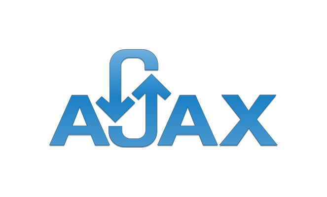
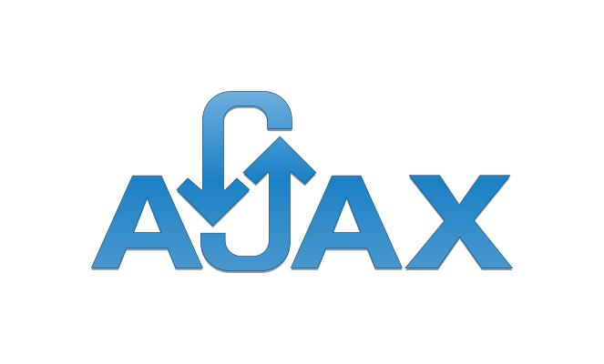

About
A passionate computer science graduate student with expertise in Cloud Computing, Software Design, and emerging technologies. Quick learner with a diligent attitude, ready to make an immediate impact. Committed to successful project roll-outs with the ability to work with all types of personalities. Background working with cutting-edge technologies and emerging concepts.

Cloud Computing & Software Testing Enthusiast.
- Highest Education: Master of Science
- Majors: Computer Science
- City: Tempe, AZ
- Email: harshnagoriya@gmail.com
Dynamic and creative technophile, having hands-on experience in producing robust code and testing processes.
Proficient in analyzing business requirements and translating them into technical requirements.
Effective interpersonal communication, team development skills and the competence to interact with cross-functional groups to accomplish objectives and meet critical deadlines in an Agile environment.
Worked on real-world projects developed using emerging software development practices.
Software Development
Data Processing
Cloud Computing
Software Design
Education

Arizona State University
Master of Science in Computer Science
August 2021 - Present
Relevant Coursework
- Cloud Computing
- Data Processing at Scale
- Software Testing/Quality Management

Dharmsinh Desai University
Bachelor of Technology in Information Technology
August 2017 - May 2021
Relevant Coursework
- Data Structure and Algorithms
- Databases
- Advanced Java and Design Patterns
Skills
Languages


Databases


Technologies/Frameworks


 


Developer Tools


Experience
Arizona State University
May 2022 - Present
Computing Assistant
- Aided developers with a large-scale rollout of OpenCast, Wistia and LMS software facilitating approx 5500 students.
- Configured, debugged, and engineered server-side web applications and administered more than 5 servers for the math and statistics department.
Arizona State University
Aug 2021 - May 2022
Graduate Services Assistant
- Aided the course instructors in creating assignments, examinations, solutions and the grading scheme and scripts for the class of 50 graduate students.
- Managed more than 2-course sections titled Internet-enabled embedded systems, Embedded Interfaces and Computer Organization throughout each semester.
Institute for Plasma Research
Dec 2020 - Apr 2021
Project Intern
- Collaborated with project guide to determine blockchain technology needs and aided by providing design insights.
- Contributed to Ethereum back-end logic and interfaces by using solidity programming language and maintained client and server-side applications.
- Collaborated with 4 developers to achieve assigned aims and organize modifications.
- Applied best software development practices and documented system workflow processes and UML diagrams.
Projects
- Built a distributed application that utilized 2 major technologies, Amazon Lambda and IoT devices to perform real-time face recognition on real videos recorded by the devices.
- Contributed by improving the IoT operations latency and tested the AWS Lambda function by sending more than 500 requests in 5 minutes.
- Implemented a python based face recognition EC2 service and developed manually scripted load-balancers that automatically scales out and scales in on-demand and cost-effectively by using AWS EC2, SQS and S3.
- Tested scalability of the application by generating 1000 concurrent user requests.
- Created a J2EE based website with 6 different levels of user roles, using Agile Software development principles, UML design concepts, git version control mechanism, taiga scrum management, specification-based testing and structural-based testing. Improved user interface by implementing JQuery and AJAX scripts.
- This project specifies the ideology for an organisation paper-based complaint system and having a replacement strategy to alleviate the problems associated with the current method. Three related concepts are encompassed by the general scope of the Complaint Management System.
- The first pertains to the replacement of paper-based complaint system using an electronic format, the second relates to an electronic strategy for the announcements or general instructions to the customer as well as users and the third surrounds the answers of frequently asked questions.
- Developed a system that detects whether a person has worn a mask or not. Using the dataset of 18236 images, ResNet-151 convolutional neural network was trained. Achieved up to 96% accuracy by implementing Adam optimiser.
- Improved latency and brought it under 3 seconds per request on RaspberryPI board.
- Taking attendance is a real-world task that needs a creative solution to reduce time, effort and resources. In this project, a raspberry PI based system detects and recognizes human faces in a quick and accurate way via images or videos that are being captured through a Camera.
- It detects the faces within the image and compares them with those listed in the database. On recognition of a registered face on the captured image assortments, that student's attendance is marked as absent. Eigen matrix concept (Eigen Face) is used in this project.
- The higher death rate in motorbike accidents is credited to carelessness in wearing a helmet by bike riders. Identification of helmetless riders continuously is a necessary task to forestall the event of such accidents, So, a project of Helmet Detection System was developed based on Deep Learning and OpenCV that recognizes whether the rider has worn mask or not, if not, his numberplate is captured and data is stored to database.
- All task is automated, SSD was used for finding bikers among moving objects, after that, CNN was used to find out whether biker has worn helmet or not, if not, numberplate is captured via YOLO & Tesseract.
Handwritten Gujarati Characters Recognition
Handwritten Digit Recognition
Sentiment Analysis using Tweets
ATM Database ManagementSystem
Covid-19 Timeline Analysis
2D games using python & python library Pygame
Walmart Sales Forecasting System
Predication & Analysis of BigMart Sales
Movie Recommendation System
House Price Prediction System
Wine Quality Prediction System
Face Recognition on a PAAS
AWS Lambda, Amazon SQS, Amazon DynamoDB, Amazon API Gateway, Docker, RaspberryPI Mar 2022 – May 2022
Face Recognition as a Service
Amazon Elastic Compute Cloud, Amazon SQS, Amazon Simple Storage Service, Flask Jan 2022 – Mar 2022
Soccer Tournament Website
Java Server Pages, Servlets, J2EE, JQuery, AJAX, Bootstrap, MVC, MariaDB Sep 2021 – Dec 2021
Complaint Management System
Java Server Pages, Servlets, J2EE, JQuery, AJAX, Bootstrap, MVC, MariaDB Feb 2021 – Apr 2021
FaceMask Detection System
Selenium, Data Collection and Processing, ResNet-101, Image Processing, RaspberryPI Sep 2020 – Dec 2020
Student Attendance System using face Recognition
Machine Learning, Eigen Faces, OpenCV, RaspberryPI, Python Feb 2020 – May 2020
Helmet Detection System
Machine Learning, Single Shot MultiBox Detector, OpenCV, YOLOv3, Python Aug 2019 – Nov 2019
Other Small Projects
Technical Papers
Live Facemask Detection System
International Journal of Imaging and Robotics™
2021 Volume 21, Issue I, Page No: 1-8, ISSN: 2231-525X
Attendance System using Face Recognition utilizing OpenCV Image Processing Library
International Journal for Research in Applied Science and Engineering Technology
2020 Volume 8, Issue VI, Page No: 1811-1814, ISSN: 2321-9653
Live Helmet Detection System for Detecting Bikers without Helmet
International Journal of Knowledge Based Computer Systems
2019 Volume 7, Issue 2, Page No: 14-17, ISSN: 2321-5623
Link: Journal's Article Page